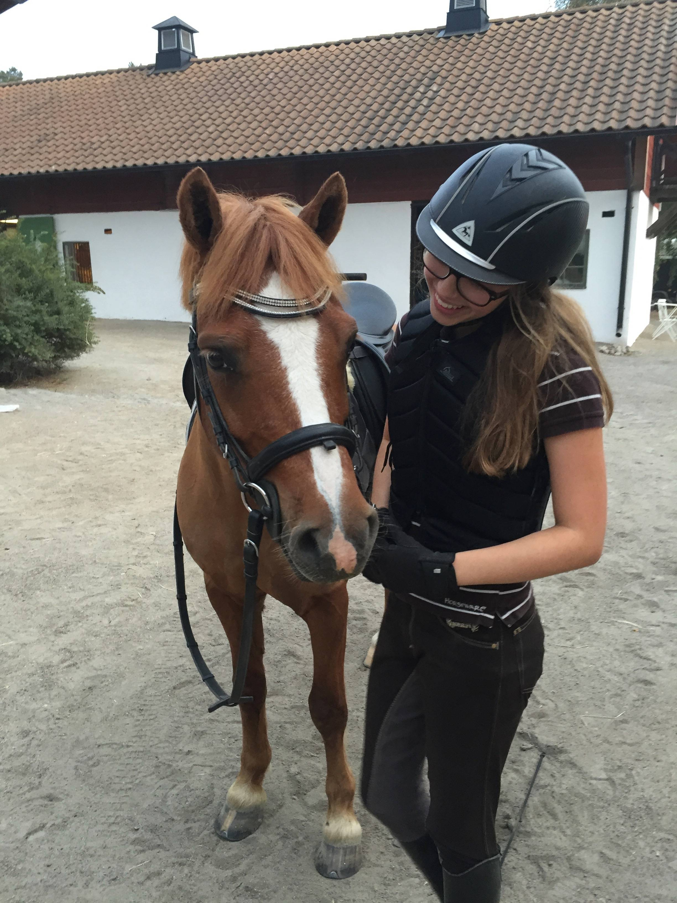

Tappvägens Ryttarförening
Våra hästar
Hästar och ponnys
Här kommer du få se alla hästar som står uppstallade på Tappvägens Ryttarförening. Vi har allt från små B-ponnys till storhästar. Välkommen att ta en titt!
Namn: Sorro
Ras: Okänd
Född: 2001-08-23
Mankhöjd: 131cm
Humör: Sorro är en fantastisk söt B-ponny som gillar att få det som han vill. Han gör inget om man inte ber om det och kan ha en räv bakom örat lite när som helst. Men hans hjärta är av guld och har är en fantastisk kompis när du väl lär känna han.
